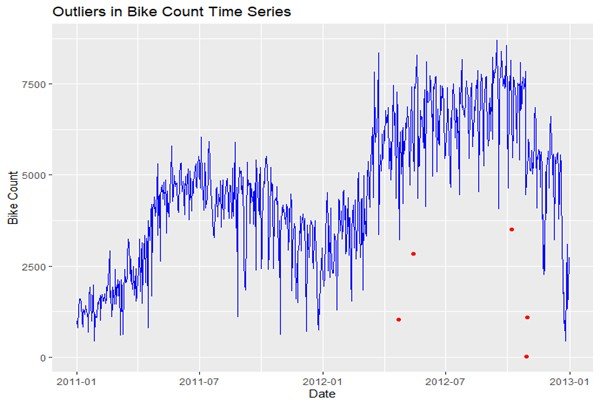
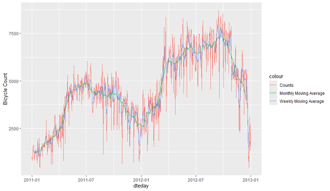
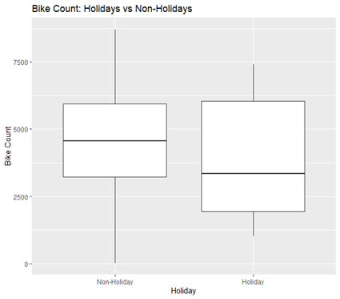
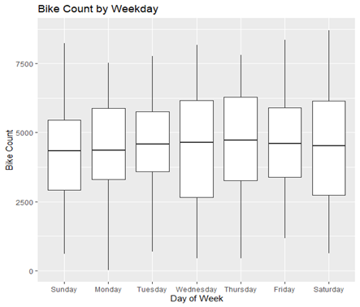
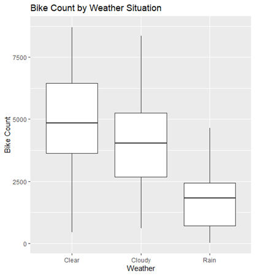
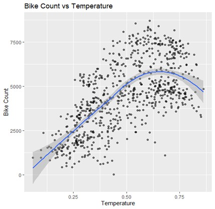
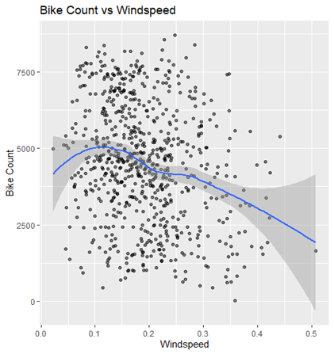
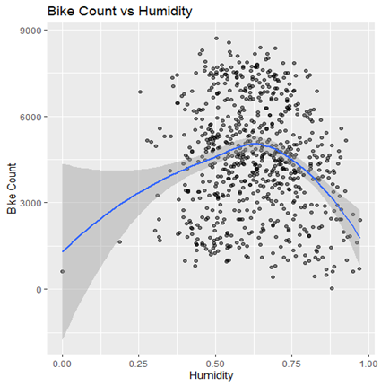
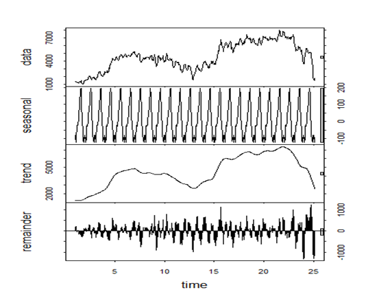
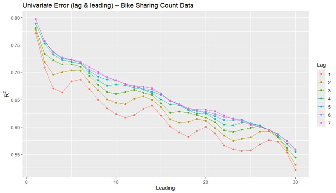

Cycles of the City:
Decoding Bike Sharing Demand
A deep dive into time series forecasting and linear modelling to predict urban cycling patterns based on weather, holidays, and seasonal trends.
Challenge
Cleaning volatile daily counts and accounting for extreme weather outliers like Hurricane Sandy.
Methodology
STL Decomposition, Moving Averages, and Multivariate Linear Regression with Factor Analysis. Analysis based on the Fanaee-T and Gama (2014) framework and the Bike Sharing Dataset from the UCI Machine Learning Repository.
Result
An Adjusted R² of 0.833, effectively identifying temperature and "the weekend effect" as primary drivers.
Section 1: Cleaning the Noise – Why Alter the Data?
Before we could model demand, we had to address the spikes and dips. The raw data contained outliers, these are days where bike counts dropped below 100 or surged over 4,000. Were these system errors, or real-world events?

Using tsclean(), we identified anomalies that aligned with major events. The corrected outliers aligned with real-world events compared with Table 4 from Fanaee-T and Gama (2014) such as Hurricane Sandy (29–30/10/2012), which had the highest impact rating (5), Bike DC (13/05/2012) and Unseasonably cool weather (07/10/2012). These events likely caused significant disruptions or surges in bike usage, explaining the anomalies in the time series. This suggests the tsclean() function effectively detected and corrected true anomalies driven by real-world conditions. However, not all corrected outliers corresponded to events listed in Table 4 (22/04/2012), it may reflect an unrecorded event, data entry errors, or simply noise in the data.
Section 2: The Visual Narrative – Seasonal Rhythms
Daily data is messy. To see the truth, we applied 7-day and 30-day moving averages. This revealed a clear, intuitive cycle: usage builds through the spring, peaks in the heat of July, and retreats as the British winter sets in.

Is the weather really the main driver of bike-sharing demand?
Our exploratory analysis suggests a resounding yes:
- The Holiday Dip: Non-holidays show higher median usage. While holidays have high-usage spikes, they are less predictable. Regular days are anchored by the commuter cycle.
- Higher use in middle of the week: There isn't a dramatic difference in usage between weekdays, but midweek (especially Wed/Thurs) may see slightly higher use. This could be related to regular commuting patterns. There is no extreme outliers visible, but the vertical range suggests a mix of high and low usage days across all weekdays.
- Weather Sensitivity: Clear skies dominate the charts. Rainy days show a dramatic collapse in both median usage and variability. People simply don't rent bikes in the rain.
- The Temperature "Sweet Spot": Usage rises linearly with temperature until about 0.6 (normalised). "What happens when it gets too hot?" Beyond that peak, counts begin to decline as discomfort and safety concerns over extreme heat take over.
- Wind and Humidity: Both exhibit non-linear "Goldilocks" zones. Moderate humidity (0.6-0.7) and low wind speeds (0.1-0.2) are the preferred conditions for local cyclists.






Stationarity & Decomposition
The STL Decomposition confirmed our suspicions: the series is non-stationary. We see a strong upward trend (growing popularity of the scheme) and a repeating seasonal component. This means we cannot use simple models; we must account for these cycles or apply differencing.

Section 3: Linear Model – Factors vs. Quantities
Initially, I ran a standard regression, but "is a Friday really 'greater' than a Tuesday?" In our first pass, the model treated days of the week as continuous numbers (0 to 6). This is a mistake.
By converting Weekday, Season, and Weather Situation into factors, we allowed the model to estimate separate effects for each category. This boosted our Mean R² from 0.971 to 0.974. While a small numerical jump, it represents a much more theoretically sound model that captures non-linear jumps between a "Cloudy" day and a "Rainy" one.
The Overfitting Trap
I experimented with converting Hours and Months to factors as well. While the R² stayed high, the model became overly complex. Lesson learned: Converting only the primary categorical variables provides the best balance of accuracy without introducing noise.
Section 4: Interpreting the Results
Our final model (Adjusted R² = 0.833) provides a clear roadmap of urban demand:
| Variable | Effect on Count | Practical Meaning |
|---|---|---|
| Year (yr) | +2084 | Strong year-on-year growth in scheme adoption. |
| Holiday | -712 | Significant drop as commuters stay home. |
| Temp | +4994 | The strongest positive driver of demand. |
| Rain (weathersit3) | -1601 | Heavy rainfall nearly halts casual rentals. |
Interestingly, while the raw data suggested Summer was the peak, the model (after adjusting for heat and humidity) actually showed Autumn (Season 4) having the highest coefficient (+1613). This suggests that when weather is "equalised," the weather in Autumn might actually encourage more consistent riding than the sweltering peak of Summer.
Section 5: Forecasting the Future (Lags and Leads)
How far into the future can we actually see? We tested the model's predictive power by introducing Lag (past data) and Lead (future prediction) variables.

The results were conclusive:
- Short-term precision: Predictive power (R²) is highest at Lead = 1 and decays as we try to look further ahead. This is because past values of bike count are more useful for predicting the near future, and correlation weakens as we try to predict further into the future.
- The Power of 7: Including up to 7 lags significantly improves the model because it captures the weekly seasonality, meaning the model "remembers" what happened last Tuesday to predict next Tuesday.
- Diminishing Returns: Beyond 7 lags, predictive power declines. The natural variability of weather and urban events eventually overrides the history of the data.
Conclusion: A Greener City
This analysis proves that while weather is the major determinant of bike-sharing demand, the underlying commuter patterns and year-on-year growth are the foundation. For city planners, this means expanding capacity not just for sunny Saturdays, but for the growing base of weekday commuters who are increasingly choosing bikes over cars.